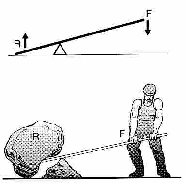

Fisica Nuclear
La física nuclear es una rama de la física que estudia las propiedades, comportamiento e interacciones de los núcleos atómicos. En un contexto más amplio, se define la física nuclear y de partículas como la rama de la física que estudia la estructura fundamental de la materia y las interacciones en entre las partículas subatómicas.
La física nuclear es conocida mayoritariamente por el aprovechamiento de la energía nuclear en centrales nucleares y en el desarrollo de armas nucleares, tanto de fisión nuclear como de fusión nuclear, pero este campo ha dado lugar a aplicaciones en diversos campos, incluyendo medicina nuclear e imágenes por resonancia magnética, ingeniería de implantación de iones en materiales y datación por radiocarbono en geología y arqueología...

Fisica Cuantica
La física cuántica es una rama de la física en la que el proceso de medida no es determinista, esto significa que dados dos sistemas físicos con el mismo estado cuántico, al medir sobre ellos una cierta magnitud no tiene por qué obtenerse el mismo valor...
Fisica Mecanica
La mecánica (en griego, Μηχανική y en latín, mēchanica) o arte de construir una máquina es la rama de la física que estudia y analiza el movimiento y reposo de los cuerpos, y su evolución en el tiempo, bajo la acción de fuerzas.Modernamente la mecánica incluye la evolución de sistemas físicos más generales que los cuerpos másicos. En ese enfoque la mecánica estudia también las ecuaciones de evolución temporal de sistemas físicos como los campos electromagnéticos o los sistemas cuánticos donde propiamente no es correcto hablar de cuerpos físicos...

Fisica Atomica
La física atómica es la rama de la física que estudia las propiedades y el comportamiento de los átomos (electrones y núcleos atómicos) así como las interacciones materia-materia y luz-materia en la escala de átomos individuales...